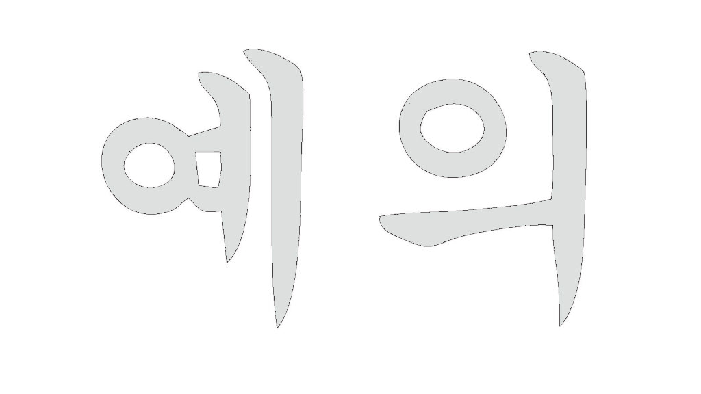
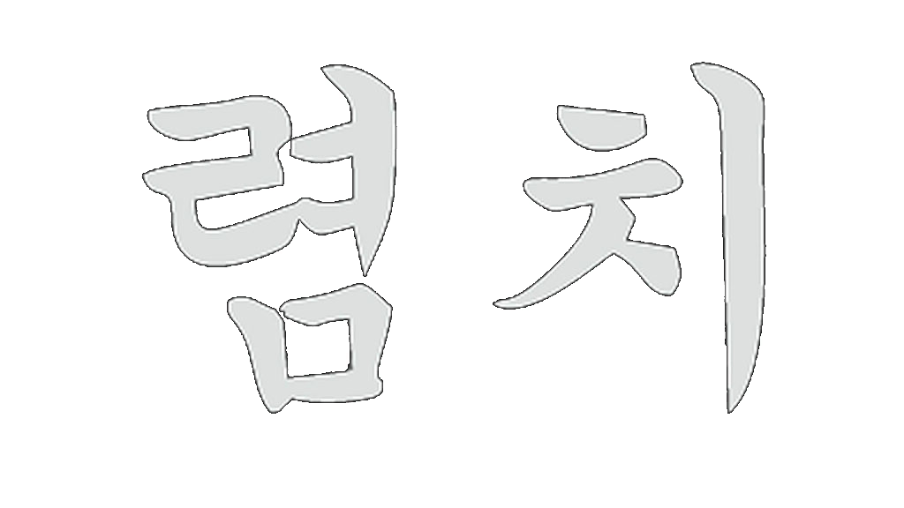
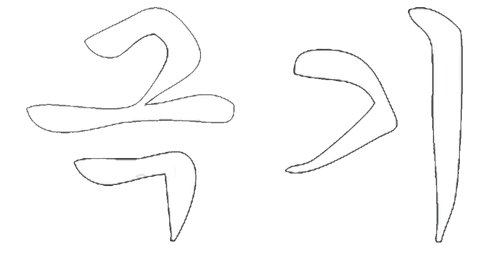
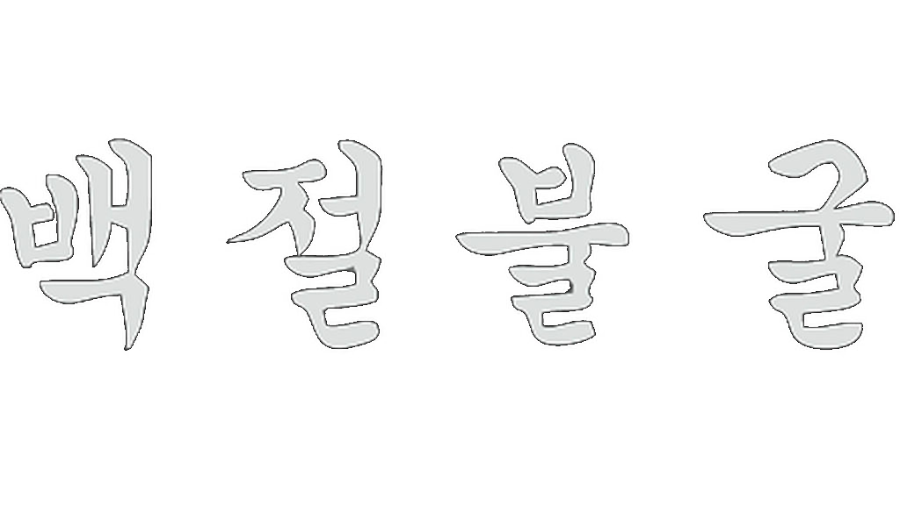

Escuela "nombre de la escuela" de Taekwondo
Bienvenidos...!!!

Te damos la bienvenida a nuestra comunidad, un espacio dedicado al arte marcial coreano del Taekwondo, donde el respeto, la disciplina y la superación personal son nuestros pilares fundamentales.
Ya seas principiante, estudiante avanzado o simplemente tengas curiosidad por este camino, aquí encontrarás un lugar para crecer, aprender y entrenar cuerpo y mente.
Nuestra escuela ofrece clases para todas las edades, entrenamientos técnicos, preparación para competencias y mucho más, siempre guiados por instructores comprometidos y con amplia experiencia.
Explorá nuestro sitio para conocer nuestras clases, horarios, filosofía de enseñanza y las actividades que realizamos.
¡Gracias por visitarnos y ser parte de esta pasión que nos une!


Significado de Taekwondo
El término "taekwondo" proviene del coreano y se compone de tres partes: "tae", que hace referencia al uso de los pies; "kwon", que se refiere al uso de las manos o puños; y "do", que significa camino o vía.
 TAE = PIE
TAE = PIE
 KWON = MANO
KWON = MANO
 DO = CAMINO
DO = CAMINO
Por lo tanto, el significado de taekwondo puede interpretarse como "el camino de los pies y las manos".
Esta definición refleja que es un arte marcial que utiliza únicamente los pies, las manos y otras partes del cuerpo, prescindiendo del uso de armas.
Además, el taekwondo no solo se enfoca en las técnicas físicas, sino que también tiene una fuerte base filosófica, promoviendo valores como la cortesía, la integridad, la perseverancia, el autocontrol y el espíritu indomable.
Filosofía del Taekwondo

La filosofía del Taekwondo se basa en cinco principios: cortesía, integridad, perseverancia, autocontrol y espíritu indomable. Además, los valores de amor fraternal y ciencia son parte de la formación infantil.
Cortesía (Ye Ui)
Se puede decir que la cortesía es una regla no escrita dada, por los antiguos maestros de la filosofía, como medio de elevación del ser humano. Más aún, puede ser considerado el criterio esencial que se le requiere a un mortal.
Los estudiantes del Taekwon-Do, tienen que intentar poner en práctica los elementos siguientes de cortesía para construir un carácter noble y también para entrenarse de una manera ordenada.
- 1 - Promover el espíritu de concesiones mutuas.
- 2 - Avergonzarse de sus vicios, despreciando los de los otros.
- 3 - Ser educado para con los demás.
- 4 - Fomentar el sentido de justicia y humanidad.
- 5 - Distinguir el instructor del estudiante, el senior del junior, el mayor del menor.
- 6 - Comportarse con educación.
- 7 - Respetar los bienes ajenos.
- 8 - Actuar con justicia y sinceridad.
- 9 - Abstenerse de dar o aceptar cualquier presente en caso de duda.
Integridad (Yom Chi)
En Taekwon-Do, la palabra “integridad” se refiere a una noción más amplia que la definición que de esta palabra da un diccionario cualquiera.
Uno tiene que distinguir lo correcto de lo incorrecto y tener conciencia, si es incorrecto de sentirse culpable.
- 1 - El instructor que se menosprecia a sí mismo y a su arte, al enseñar técnicas incorrectas a sus estudiantes, sea por falta de conocimientos o apatía.
- 2 - El estudiante que se menosprecia a si mismo preparando de antemano con trucos los materiales que deben ser rotos durante las demostraciones.
- 3 - El instructor que disimula sus técnicas defectuosas con una sala de entrenamiento lujosa y falsos halagos a sus estudiantes.
- 4 - El estudiante que obtiene un rango solo con un propósito egocéntrico o por sentirse más poderoso.
- 5 - Distinguir el instructor del estudiante, el senior del junior, el mayor del menor.
- 6 - El instructor que enseña y promueve su arte solo con un propósito material.
- 7 - El instructor o el estudiante cuyas acciones son diferentes a sus palabras.
- 8 - El estudiante que se siente avergonzado a pedir opiniones a sus menores.
Perseverancia (In Nae)
Hay un antiguo dicho oriental, “La paciencia lleva a la virtud o al mérito”. “Uno puede construir un hogar más pacífico siendo paciente 100 veces”. Ciertamente, la felicidad y la prosperidad parecerían provenir de personas pacientes. Para lograr algo, tal como una alta graduación o el perfeccionamiento técnico y obtener el objetivo buscado, uno debe perseverar constantemente. Robert Bruce aprendió su lección de perseverancia del persistente esfuerzo de una lenta y solitaria araña.
Fue su perseverancia y tenacidad lo que finalmente le posibilitó liberar a Escocia en el siglo XIV. Uno de los más importantes secretos para convertirse en un líder en Taekwon-Do es sobreponerse a toda dificultad con perseverancia. Confucio dijo: “Quien es impaciente en temas triviales fallará en sus logros en asuntos de mucha importancia”.
Autocontrol (Guk Gi)
Este principio es extremadamente importante tanto dentro como fuera del Do Jang, es como uno se conduce en combate libre o en temas personales y privados. La pérdida de autocontrol en combate libre puede provocar un desastre, tanto en uno mismo como en el oponente. Una inhabilidad para vivir o trabajar con plena capacidad también es una pérdida de autocontrol. De acuerdo con Lao-Tzu “El mas fuerte es la persona sobre sí mismo mas que sobre cualquier otro”.
Espíritu indomable (Baekjul Boolgool)
“Aquí yacen 300, que cumplieron con su deber”, un epitafio sencillo para uno de los mayores actos de coraje conocidos en la humanidad. Frente a las fuerzas superiores de Xerxes, Leonidas y sus 300 espartanos en Thermopylas demostraron al mundo el significado del espíritu indomable. Se manifiesta cuando una persona enfrenta un problema inmenso utilizando su valentía y sin renunciar a sus principios.
Un estudiante serio de Taekwon-Do siempre debe ser modesto y honesto. Si éste confronta una injusticia, actuará contra el beligerante sin ningún temor o vacilación, con un espíritu indomable, sin tener en cuenta el número de las personas que deba enfrentar. Confucio dijo: “No protestar contra la injusticia es acto de cobardía”. Como lo ha demostrado la historia, los que persiguen sus sueños, honrada y vigorosamente con un espíritu indomable, jamas fallaron en el logro de sus objetivos.